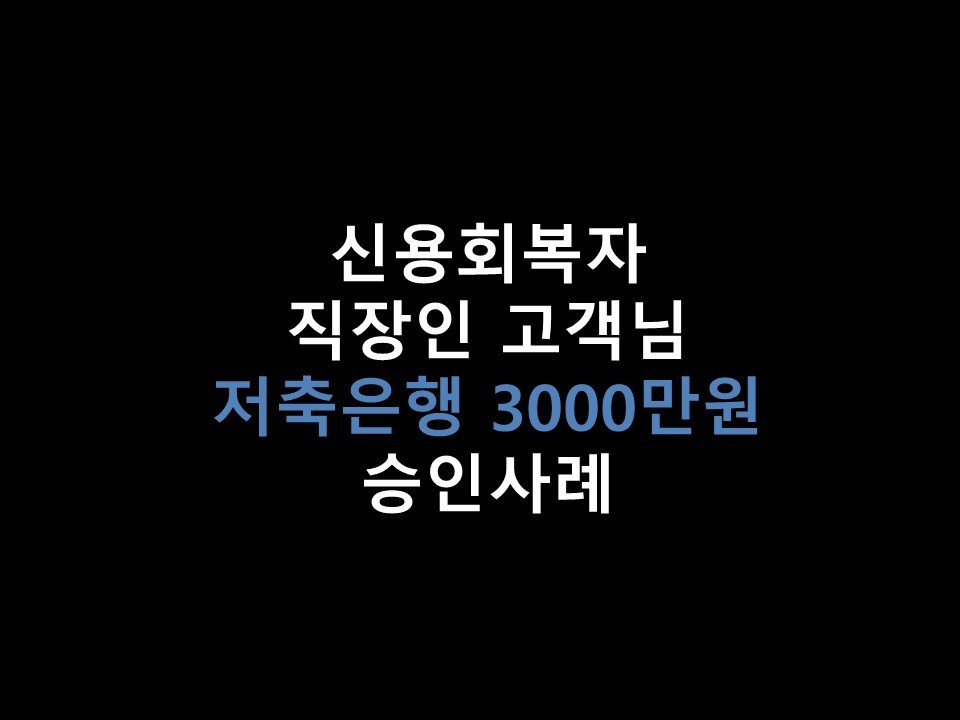
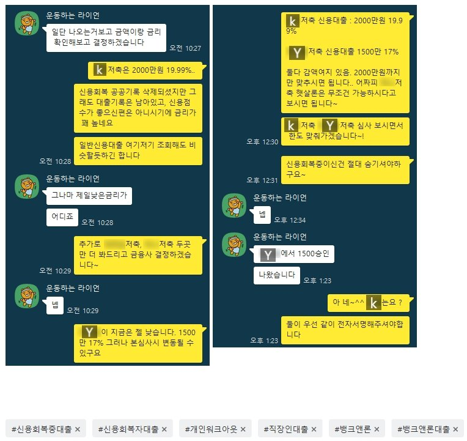

★신용회복자 직장인 고객님 저축은행 3000만원 승인사례★

안녕하세요 ~! 오늘은 신용회복중이신 직장인 고객님의 대출 승인사례를 소개해드리겠습니다 ^^.
고객님께서는 현재 신용회복 월 19만원 납입, 총 96회중 30회납입, 미납은 없으셨습니다.
개인워크아웃이었으며, 공공기록이 삭제되어 현재 신용점수는 NICE 기준 725점이었습니다.
고객님께서는 현재 4대보험 가입된 직장에서 2년간 근무하셨으며, 월 평균 250만원을 통장으로 수령하고 계셨습니다 ^^.
고객님께서는 3000만원의 필요자금이 생기셔서 저희 뱅크앤론으로 문의를 주셨습니다.
현재 이용중이신 대출이 없으셨기에, 원하시는 한도 2금융권으로 충분히 가능하실듯 보여, 승인률 좋은 저축권으로
가조회를 도움드렸습니다 ^^. 그 결과 K저축은행에서 2000만원 19.99%, Y저축은행에서 1500만원 17%의 한도가 나오게 되었습니다 ^^.
신용이 회복되신지 얼마 되지않아 금리는 높게 나왔지만.. 고객님께서는 만족해하시며 진행을 원하셨습니다^^.
그리하여 K저축 1500만, Y저축 1500만 동시진행을 도움드린 결과 두 금융사 한도 모두 온전히 당일 승인 받으실 수있게 되셨습니다~
또 H저축은행에서 정부지원 상품 1000만원 6.09%의 한도가 나오셨지만, 정부지원 상품은 추후 신용이 조금 떨어지더라도
언제든 받으실 수있으시기에.. 이번에는 보류하시고, 추후 자금이 필요하실때 받아가시기로 하셨습니다 ^^.
아래는 저와 고객님의 대화내용입니다. 참고 부탁드립니다 ^^.
감사합니다.
